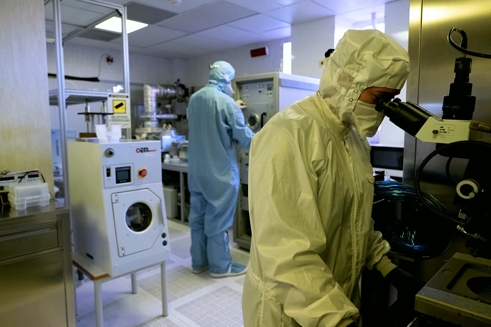
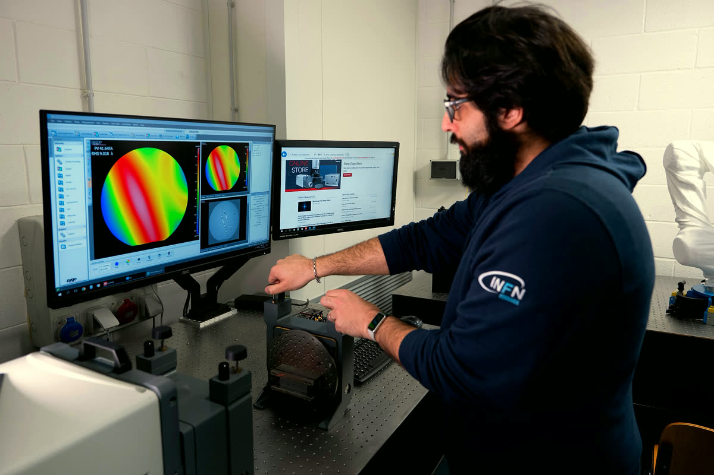

Do your thesis with us.
Bachelor (LT), master (LM) and PhD theses in the lab on bonded bent crystals, in data analysis and in simulation. Write to the contacts listed for each topic, or come and see the lab.
Leggi in italianoHow it works.
- Pick a topic
Every topic below is open to bachelor (LT) and master (LM) theses. For a PhD, write to crystals@fe.infn.it.
- Write to its contacts
Say which degree you are on and when you would like to start. Any of the people listed can answer.
- Come and see the lab
Meet the group, see the cleanroom and the instruments, and agree on your project with your supervisor, who can be from the University or from INFN.


Crystal BOND in the lab
Crystal BOND, the INFN project we coordinate (2025–2027), bends crystals by bonding them to figured substrates of glass or metal. These theses are hands-on work in our cleanroom: bonding, shaping and measuring the crystals, then testing them with X-rays and particle beams. The project site →


- Anodic bonding of thick silicon crystals for the LHC
- Bent crystal analysers in quartz and lithium niobate for X-ray spectroscopy
- Thin bonding films: polymers and adhesives for bent crystals
- Building blocks for Laue lenses: aligned bent tiles on one substrate
- Metrology of bonded crystals by X-ray diffraction and interferometry
Data analysis
- Performance analysis of prototype calorimeters with oriented crystals for HEP and satellites
- Data analysis of beam tests on bent crystals
- Performance of innovative positron-source prototypes
Geant4 simulation
- Simulations of beam-test setups for oriented crystals
- Development of crystal physics in the Geant4 toolkit
- Simulations of plasma wakefield acceleration in solid targets at SLAC E336
- Design of the FCC-ee injection system
Laboratory work
- Development of prototype calorimeters with oriented crystals for HEP and satellites
- Development and characterisation of bent crystals
Interested in another line?
No topic is listed yet for these lines. Write to their contacts to ask about a thesis.
- Crystalline undulatorsHard photons from periodically bent crystalsLaura Bandiera
- X-ray tomoscopyCrystal beam splitters for MHz imagingcrystals@fe.infn.it
- Cryogenic detectorsSilicon arrays for dark matter and neutrinoscrystals@fe.infn.it
- Gravitational wavesSilicon optics for the Einstein Telescopecrystals@fe.infn.it
The projects named above.
- OREO
- Our INFN project on calorimeters made of oriented crystals.
- CERN DRD6
- CERN collaboration for research and development on calorimeters.
- Mu2e
- Fermilab experiment searching for the conversion of a muon into an electron; our bent crystals protect its beam extraction.
- TWOCRYST
- Test at the LHC with two bent crystals in sequence.
- CRYSTAL BOND
- Our INFN project on crystals bonded to shaped substrates.
- e+BOOST
- Research project (PRIN) on positron sources made of oriented crystals.
- PSI P3
- Positron-source experiment at the Paul Scherrer Institute.
- FCC-ee
- The proposed Future Circular Collider for electrons and positrons at CERN.
- TRILLION
- Marie Skłodowska-Curie fellowship on crystal physics in Geant4.
- GEANT4INFN
- INFN project that develops the Geant4 toolkit.